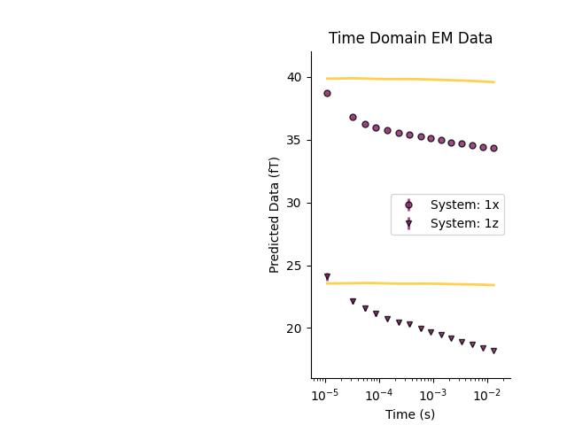
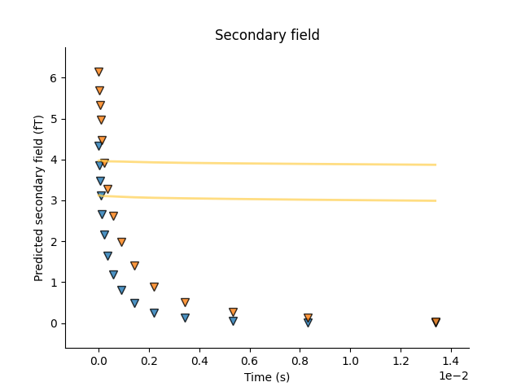

Note
Click here to download the full example code
Tempest Datapoint Class
There are three ways in which to create a time domain datapoint
Instantiating a time domain datapoint
Reading a datapoint from a file
Once instantiated, see Using a time domain datapoint
Credits: We would like to thank Ross Brodie at Geoscience Australia for his airborne time domain forward modeller https://github.com/GeoscienceAustralia/ga-aem
For ground-based time domain data, we are using Dieter Werthmuller’s python package Empymod https://empymod.github.io/
Thanks to Dieter for his help getting Empymod ready for incorporation into GeoBIPy
from os.path import join
import numpy as np
import h5py
import matplotlib.pyplot as plt
from geobipy import hdfRead
from geobipy import Waveform
from geobipy import SquareLoop, CircularLoop
from geobipy import butterworth
from geobipy import TdemSystem
from geobipy import TempestData
# from geobipy import TemDataPoint
from geobipy import Model1D
from geobipy import StatArray
from geobipy import Distribution
dataFolder = "..//supplementary//Data//"
# dataFolder = "source//examples//supplementary//Data"
Obtaining a datapoint from a dataset
More often than not, our observed data is stored in a file on disk. We can read in a dataset and pull datapoints from it.
For more information about the time domain data set, see Time domain dataset
# The data file name
dataFile = dataFolder + 'Tempest.nc'
# The EM system file name
systemFile = dataFolder + 'Tempest.stm'
# Prepare the dataset so that we can read a point at a time.
Dataset = TempestData._initialize_sequential_reading(dataFile, systemFile)
# Get a datapoint from the file.
tdp = Dataset._read_record(0)
plt.figure()
tdp.plot()
Out:
<AxesSubplot:title={'center':'Time Domain EM Data'}, xlabel='Time (s)', ylabel='Data (fT)'>
Using a time domain datapoint
We can define a 1D layered earth model, and use it to predict some data
par = StatArray(np.r_[1/50.0, 1/100.0, 1/1000.0, 1/5.0, 1/1000.0, 1/800.0], "Conductivity", "$\frac{S}{m}$")
mod = Model1D(edges=np.r_[0, 20.0, 50.0, 100.0, 150.0, 250.0, np.inf], parameters=par)
Forward model the data
tdp.forward(mod)
plt.figure()
plt.subplot(121)
_ = mod.pcolor(transpose=True)
plt.subplot(122)
_ = tdp.plot()
_ = tdp.plot_predicted()
plt.tight_layout()
plt.suptitle('Model and response')
Out:
Text(0.5, 0.98, 'Model and response')
plt.figure() tdp.plotDataResidual(xscale=’log’) plt.title(‘data residual’)
Compute the sensitivity matrix for a given model
J = tdp.sensitivity(mod)
plt.figure()
_ = np.abs(J).pcolor(equalize=True, log=10, flipY=True)
Attaching statistical descriptors to the datapoint
Set relative errors for the primary fields, and secondary fields.
tdp.relErr = np.r_[0.01, 0.05]
# Set the additive errors for
tdp.addErr = np.hstack([[0.011474, 0.012810, 0.008507, 0.005154, 0.004742, 0.004477, 0.004168, 0.003539, 0.003352, 0.003213, 0.003161, 0.003122, 0.002587, 0.002038, 0.002201],
[0.007383, 0.005693, 0.005178, 0.003659, 0.003426, 0.003046, 0.003095, 0.003247, 0.002775, 0.002627, 0.002460, 0.002178, 0.001754, 0.001405, 0.001283]])
# Define a multivariate log normal distribution as the prior on the predicted data.
tdp.predictedData.prior = Distribution('MvLogNormal', tdp.data[tdp.active], tdp.std[tdp.active]**2.0)
This allows us to evaluate the likelihood of the predicted data
print(tdp.likelihood(log=True))
# Or the misfit
print(tdp.dataMisfit())
Out:
-158.94319013150562
17.302474406320894
Plot the misfits for a range of half space conductivities
plt.figure()
plt.subplot(1, 2, 1)
_ = tdp.plotHalfSpaceResponses(-6.0, 4.0, 200)
plt.title("Halfspace responses")
Out:
Text(0.5, 1.0, 'Halfspace responses')
We can perform a quick search for the best fitting half space
halfspace = tdp.find_best_halfspace()
print('Best half space conductivity is {} $S/m$'.format(halfspace.par))
plt.subplot(1, 2, 2)
_ = tdp.plot()
_ = tdp.plot_predicted()
plt.figure()
tdp.plot_secondary_field()
tdp.plot_predicted_secondary_field()
# ################################################################################
# # We can attach priors to the height of the datapoint,
# # the relative error multiplier, and the additive error noise floor
# Define the distributions used as priors.
heightPrior = Distribution('Uniform', min=np.float64(tdp.z) - 1.0, max=np.float64(tdp.z) + 1.0)
relativePrior = Distribution('Uniform', min=np.r_[0.01, 0.01], max=np.r_[0.5, 0.5])
pitchPrior = Distribution('Uniform', min=tdp.transmitter.pitch - 5.0, max=tdp.transmitter.pitch + 5.0)
# additivePrior = Distribution('Uniform', min=np.r_[1e-12, 1e-13], max=np.r_[1e-10, 1e-11], log=True)
tdp.set_priors(height_prior=heightPrior, relative_error_prior=relativePrior, transmitter_pitch_prior=pitchPrior)#, additive_error_prior=additivePrior)
- 
- 
Out:
Best half space conductivity is [0.04641589] $S/m$
In order to perturb our solvable parameters, we need to attach proposal distributions
heightProposal = Distribution('Normal', mean=tdp.z, variance = 0.01)
relativeProposal = Distribution('MvNormal', mean=tdp.relErr, variance=2.5e-4)
transmitter_pitch_proposal = Distribution('Normal', mean=tdp.transmitter.pitch, variance = 0.01)
# additiveProposal = Distribution('MvLogNormal', mean=tdp.addErr, variance=2.5e-3, linearSpace=True)
tdp.set_proposals(heightProposal, relativeProposal, transmitter_pitch_proposal=transmitter_pitch_proposal)#, additiveProposal)
With priorss set we can auto generate the posteriors
tdp.set_posteriors()
Perturb the datapoint and record the perturbations Note we are not using the priors to accept or reject perturbations.
for i in range(10):
tdp.perturb()
tdp.updatePosteriors()
plt.show()
Total running time of the script: ( 0 minutes 1.811 seconds)